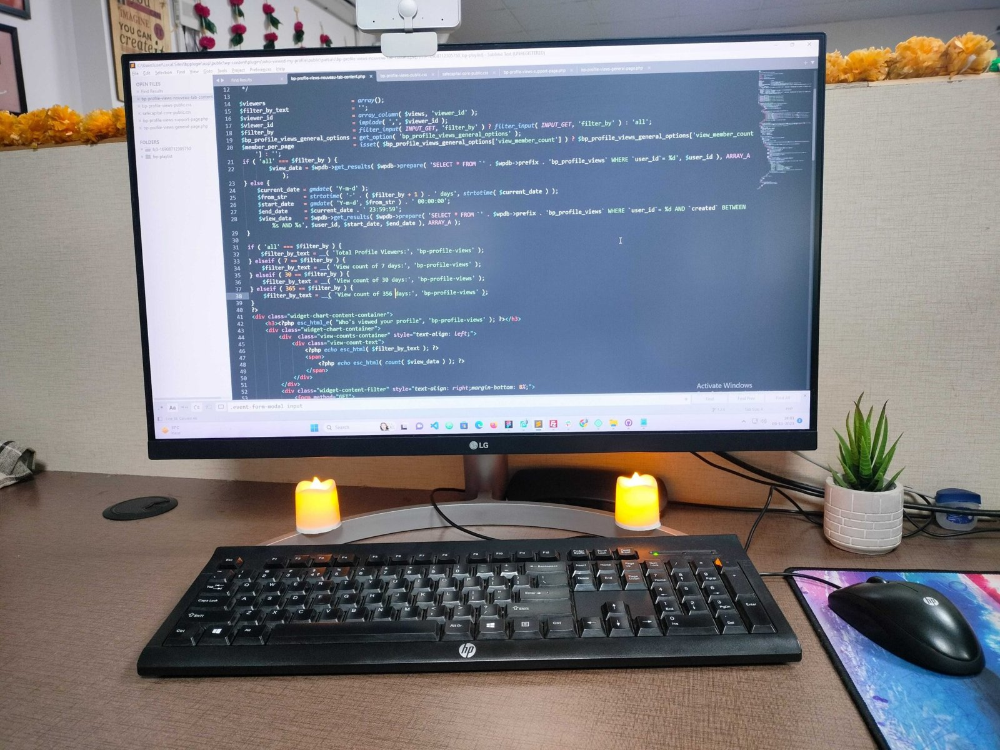

2022年11月にChatGPTが出てから、ノルウェーの20代のプログラマーは約15%減りました。同じ職種の30代は22%増えています。
ここだけ見ると「AIが若手の仕事を奪った」と読めます。ところが同じデータで全職種を並べ直すと、AIに近い仕事の20代と、遠い仕事の20代で、減り方にほとんど差がありませんでした。
来年の新卒・若手採用をどうするか迷っている経営者の方に向けて、この2つの結果がなぜ同時に成り立つのかと、米国の求人570万件で見えた「残った若手の仕事の中身」をまとめます。
月310万件の雇用記録を、毎月すべて数えている
材料は、ノルウェーの雇用主が毎月国に出す届け出です。民間の雇用ほぼ全部、月におよそ310万件の雇用記録が入っています(自営業は含みません)。アンケートではなく、給料が支払われた記録そのものです。
オスロの研究者2人が、全職種をAIに任せられる作業の多さで5段階に分け、年代別に人数を追いました。論文は6月にIZA(労働経済学の国際的な研究者ネットワーク)の論文集で出た、査読前のものです。数字は公開ダッシュボード「KI-indeksen」で毎月更新されていて、9月の更新で2026年6月分まで入りました。以下の数字は、2022年11月の人数を100とした指数です(季節の波は除いてあります)。
職種を4つ選んで20代と30代を比べると、こうなります。
- プログラマー:20代 84.5/30代 121.8
- カスタマーサービス:20代 82.7/30代 123.6
- 電気工事士:20代 101.0/30代 104.7
- 訪問介護のヘルパー:20代 159.6/30代 134.5
AIに近い2職種では20代だけが減り、遠い2職種では20代も減っていません。米国の給与データで見えた形(8月18日の記事で紹介しました)と同じです。
全職種で並べると、差は消えた
ところが、職種を選ばずに全部を5段階に並べると、20代の指数は次のとおりでした。
- AIに最も近い仕事の20代:93.1
- AIから最も遠い仕事の20代:94.0
差は1ポイントもありません。ダッシュボードの推計でも、20代の差はマイナス1ポイント前後、95%の幅はマイナス8からプラス6.5で、ゼロと区別できない結果です。全年代で見た論文の数字(2026年2月まで)も、AIに近い仕事が0.1%増、遠い仕事が0.3%増で、統計的な差はありませんでした。
一方で、AIに最も近い仕事でも最も遠い仕事でも、20代は同じように6%前後減っています(20代全体では2%ほどの減少)。この時期のノルウェーは政策金利が0%から4.5%まで上がり、コロナ後の採用の反動も重なっていました。著者たちも、目立つ職種の若手の減少がAIのせいなのか、金利や景気のせいなのかは、いまのデータでは切り分けられないと書いています。
同じ論文の整理では、北欧でも割れています。スウェーデンは若手の減少あり(ただし多くは金利の影響とする分析)、デンマークとフィンランドは差なし。デンマークはAIを職場で使い始めた人と使っていない人を約2万5,000人規模で比べ、収入と雇用に差が出ていません。
言えるのは、「一部の職種では若手の入口が狭くなっている。ただ、それが経済全体の若手の仕事を減らしている証拠は、まだ出ていない」というところまでです。
残った若手の求人は、何を求めたか
では、入口が狭くなった職種で、何が起きたのか。米ノースイースタン大学のチームが、米国のソフトウェア開発者の求人約570万件(2019年1月〜2025年3月)を調べました。こちらも6月にIZAの論文集で出た、査読前の論文です。
- ChatGPTの公開後12か月で、経験4年未満の求人は、4年以上の求人に比べて約14〜15%減った。IT系の他の職種の若手求人と比べても11〜13%多く減り、機械エンジニアでは同じ動きがなかった
- 「経験3年以下」を条件にした求人の割合は、20.2%(2022年10月)から14.5%(2023年10月)に下がった
- 経験年数の引き上げは、職種名が変わったからではなく、同じ職種名のまま求める年数が上がったことで起きていた
- 残った若手求人で増えたのは「問題解決」(16.7%、それまでの流れからの予測は13.1%)や、人とのやりとり、細部への注意だった。「AI」のスキルを求める割合は、予測の27.8%に対して14.3%と、むしろ下がった
AIの使い方を知っている若手が選ばれたのではありませんでした。AIが下書きを書ける前提で、「出てきたものの問題を見つけて、相手に説明できる人」を若手にも求めるようになった、という変化です。
中小企業が、来年の採用の前にやれること
うちも若手の採用や研修の相談を受ける立場なので、この2本を読んで考えたことを3つにまとめます。
1. 「AIがあるから若手はいらない」と決める前に、若手に任せている仕事を1週間分書き出す。AIが下書きできる作業と、確認や説明のように人に残る作業を分けると、減らせる量と残る量が見える
2. 求人票で経験年数を上げる前に、残る仕事を言葉で書く。「AIが作った見積もりの誤りに気づける」「お客様に理由を説明できる」など。経験年数で絞ると、候補者の母数そのものが減る
3. 若手を「AIの出したものを確認する係」に置いて、判断は先輩が持つ段を作る。問題を見つける力は、確認の数を重ねないと育たない
一部の職種で入口が狭くなっているのは、ノルウェーでも米国でも確かに見えています。ただ、それは若手を採らない理由というより、若手に最初に渡す仕事を作り直す合図だと私は受け止めました。
まとめ
- ノルウェーの民間雇用の全数(月約310万件)で、20代のプログラマーは15%減、カスタマーサービスは17%減。同じ職種の30代は2割以上増えた
- ただ全職種を並べると、AIに近い仕事と遠い仕事で20代の減り方に差はなく、金利や景気の影響とも切り分けられていない
- 米国のソフト開発の求人570万件では、若手求人が14〜15%減り、残った求人は経験年数と問題解決を求めるようになった。AIのスキルを求める割合は下がった
次にやることは、若手に任せている仕事を1週間分書き出して、AIが下書きできる作業と人に残る作業に分けることです。求人票に書く中身は、そこから出てきます。
AIで浮いた時間を若手が何に使えば、その先の仕事が楽しくなるか。それを一緒に考えるのが、私たちの仕事だと思っています。
出典
Øystein Hernæs, Andreas R. Kostøl「Has AI Widened Employment Gaps? Tracking Early-Career Employment by Occupational Exposure in Norway」(IZA Discussion Paper No. 18767、2026年6月／査読前の論文。ノルウェー統計局の雇用登録、民間雇用の全数、2026年2月分まで)
https://docs.iza.org/dp18767.pdf
KI-indeksen(上記論文の公開ダッシュボード。2026年9月更新、2026年6月分まで／公的統計にもとづく速報値。本文の職種別・年代別の指数はここから)
Samuel Westby, Alicia Modestino, Peiran Cheng「Generative AI and the Redefinition of Entry-Level Software Work」(IZA Discussion Paper No. 18723、2026年6月／査読前の論文。米国のオンライン求人データLightcast、ソフトウェア開発者の求人約570万件)
https://docs.iza.org/dp18723.pdf
この記事と同じ内容を、公式noteでも公開しています。 公式note 記事一覧